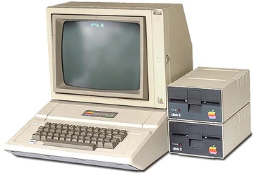
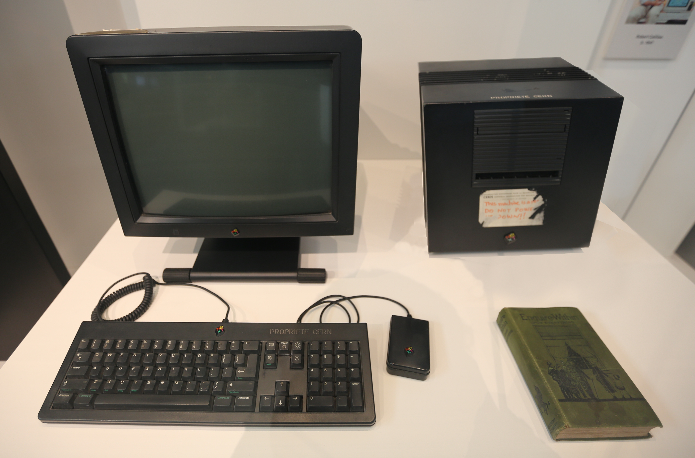

The first modern computer was invented in the 1940s. It was used for various projects, including the Manhattan Project. It was also employed for a wide range of scientific calculations, including problems in physics, engineering, and other fields.

In the 1970s, the first personal computer for the masses was introduced: the Apple II. It had pioneering features such as color graphics, open architecture which allowed for 3rd-party software to be used, making the computer more versatile. It was also user-friendly, with a GUI and a mouse.
In the 1990s, the World Wide Web was created at CERN labratory using NeXT computers by Tim Berners Lee.
Click here to learn about the cultural impact of the computer